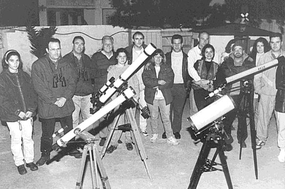
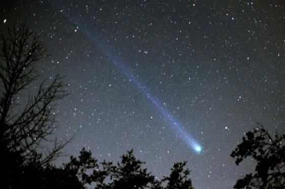

INDICE
ENLACES
COLABORA
NUESTRO COMIENZO
 Los orígenes de nuestra Agrupación se remontan al sábado 9 de marzo de 1996 cuando un reducido grupo de aficionados en respuesta a un llamamiento del Instituto de Astrofísica de Canarias para batir el record del mayor número de personas observando un cometa, nos congregamos en una casita cerca del acuartelamiento de Camposoto para observar el Cometa Hyakutake. Allí se decide formar un grupo de observaciones que sería el germen de la actual Agrupación Esta idea se difunde a través de los medios de comunicación locales y un mes después con la presencia de medio centenar de aficionados tiene lugar en la Casa de la Cultura de nuestra ciudad la primera Asamblea Constituyente y la elección de la primera junta gestora que daría los pasos necesarios para la puesta en marcha y legalización de la AASF. La primera Asamblea Extraordinaria se celebra el viernes 26 de abril de 1996. En esta reunión se debaten y posteriormente se aprueban los Estatutos de la AGRUPACION ASTRONOMICA DE SAN FERNANDO (Cádiz). La Agrupación queda registrada con el número 161.053 en el Registro Nacional de Asociaciones. El martes 18 de junio se hace efectiva la legalización, por parte del Ministerio del Interior, de la Agrupación concediéndose el número 161.053 en el Registro Nacional de Asociaciones. El 26 de julio quedamos inscritos en el Registro Local con el número 124 y un mes después a nivel provincial con el número de asociación 4474. Durante estos primeros años la AASF comienza una incipiente labor de difusión con la celebración de observaciones públicas en diferentes zonas de San Fernando (La Magdalena, el Parque Almte. Laulhé, la alameda Moreno de Guerra, la playa de Camposoto, etc.). Además se celebra el I Ciclo de Conferencias y Charlas-coloquio en los salones de la Casa de la Cultura de San Fernando.
Comparte con nosotros el XX ANIVERSARIO
Real Instituto y Observatorio de la Armada